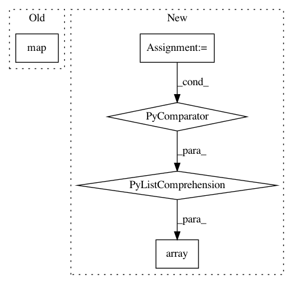

fc4917ae8a7320fc9a258b50d82a177ed2124a91,category_encoders/basen.py,BaseNEncoder,fit_base_n_encoding,#BaseNEncoder#,148
Before Change
digits = self.calc_required_digits(X, col)
X_unique = pd.DataFrame(index=values)
X_unique_to_cols = X_unique.index.map(lambda x: self.col_transform(x, digits))
for dig in range(digits):
X_unique[str(col) + "_%d" % (dig,)] = X_unique_to_cols.map(
lambda r: int(r[dig]) if r is not None else None)
After Change
digits = self.calc_required_digits(values)
X_unique = pd.DataFrame(index=values,
columns=[str(col) + "_%d" % x for x in range(digits)],
data=np.array([self.col_transform(x, digits) for x in range(1, len(values) + 1)]))
if self.handle_unknown == "return_nan":
X_unique.loc[-1] = np.nan
In pattern: SUPERPATTERN
Frequency: 4
Non-data size: 5
Instances
Project Name: scikit-learn-contrib/categorical-encoding
Commit Name: fc4917ae8a7320fc9a258b50d82a177ed2124a91
Time: 2018-12-21
Author: jcastaldo08@gmail.com
File Name: category_encoders/basen.py
Class Name: BaseNEncoder
Method Name: fit_base_n_encoding
Project Name: librosa/librosa
Commit Name: 7ca0da3854c49f73bd2aae5592f1cf5a9f7177d4
Time: 2014-11-06
Author: brian.mcfee@nyu.edu
File Name: librosa/core.py
Class Name:
Method Name: note_to_midi
Project Name: geomstats/geomstats
Commit Name: b0a4e46eba5f197d873ff39649031a085f5e9a6b
Time: 2021-02-09
Author: marius.guerard@gmail.com
File Name: geomstats/datasets/prepare_emg_data.py
Class Name: TimeSeriesCovariance
Method Name: _format_labels
Project Name: acoular/acoular
Commit Name: 97a346493ac31f120102d4cb3cf8586333d1a1ec
Time: 2010-09-16
Author: sarradj@tu-cottbus.de
File Name: beamfpy/beamfpy.py
Class Name:
Method Name: synthetic